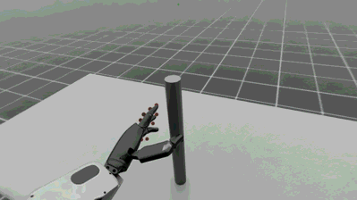

NVIDIA CloudXR enables seamless, high-fidelity immersive streaming to extended reality (XR)
devices over any network.
Isaac Lab developers can use CloudXR with Isaac Lab to build teleoperation workflows that require
immersive XR rendering for increased spatial acuity and/or hand tracking for teleoperation of
dextrous robots.
In these workflows, Isaac Lab renders and submits stereo views of the robot simulation to CloudXR,
which then encodes and streams the rendered views to a compatible XR device in realtime using a
low-latency, GPU-accelerated pipeline. Control inputs such as hand tracking data are sent from the
XR device back to Isaac Lab through CloudXR, where they can be used to control the robot.
This guide explains how to use CloudXR and Apple Vision Pro for immersive streaming and
teleoperation in Isaac Lab.
Note
Support for additional devices is planned for future releases.
Using CloudXR with Isaac Lab involves the following components:
Isaac Lab is used to simulate the robot environment and apply control data received from the
teleoperator.
The NVIDIA CloudXR Runtime runs on the Isaac Lab workstation in a Docker container, and streams
the virtual simulation from Isaac Lab to compatible XR devices.
The Isaac XR Teleop Sample Client is a sample app for Apple Vision Pro which enables
immersive streaming and teleoperation of an Isaac Lab simulation using CloudXR.
Required for best performance: 16 cores Intel Core i9, X-series or higher AMD Ryzen 9,
Threadripper or higher
Required for best performance: 64GB RAM
Required for best performance: 2x RTX 6000 Ada GPUs (or equivalent)
Apple Vision Pro
visionOS 2.0+
Apple M3 Pro chip with an 11-core CPU with at least 5 performance cores and 6 efficiency cores
16GB unified memory
256 GB SSD
Apple Silicon based Mac (for building the Isaac XR Teleop Sample Client App for Apple Vision Pro
with Xcode)
macOS Sonoma 14.5 or later
Wifi 6 capable router
A strong wireless connection is essential for a high-quality streaming experience
We recommend using a dedicated router, as concurrent usage will degrade quality
The Apple Vision Pro and Isaac Lab workstation must be IP-reachable from one another (note:
many institutional wireless networks will prevent devices from reaching each other, resulting
in the Apple Vision Pro being unable to find the Isaac Lab workstation on the network)
The CloudXR Runtime runs in a Docker container on your Isaac Lab workstation, and is responsible for
streaming the Isaac Lab simulation to a compatible XR device.
If prompted, elect to activate X11 forwarding, which is necessary to see the Isaac Lab UI.
Note
The container.py script is a thin wrapper around Docker Compose. The additional
--files and --env-file arguments augment the base Docker Compose configuration to
additionally run the CloudXR Runtime
For more details on container.py and running Isaac Lab with Docker Compose, see the
Docker Guide.
Enter the Isaac Lab base container with:
./docker/container.pyenterbase
From within the Isaac Lab base container, you can run Isaac Lab scripts that use XR.
Option 2: Run Isaac Lab as a local process and CloudXR Runtime container with Docker
Isaac Lab can be run as a local process that connects to the CloudXR Runtime Docker container.
However, this method requires manually specifying a shared directory for communication between
the Isaac Lab instance and the CloudXR Runtime.
On your Isaac Lab workstation:
From the root of the Isaac Lab repository, create a local folder for temporary cache files:
mkdir-p$(pwd)/openxr
Start the CloudXR Runtime, mounting the directory created above to the /openxr directory in
the container:
The Viewport should show two eyes being rendered, and you should see the status “AR profile is
active”.
Isaac Lab is now ready to receive connections from a CloudXR client. The next sections will walk
you through building and connecting a CloudXR client.
Learn More about Teleoperation and Imitation Learning in Isaac Lab
To learn more about the Isaac Lab teleoperation scripts, and how to build new teleoperation and
imitation learning workflows in Isaac Lab, see Teleoperation and Imitation Learning.
This section will walk you through building and installing the Isaac XR Teleop Sample Client for
Apple Vision Pro, connecting to Isaac Lab, and teleoperating a simulated robot.
Build and Install the Isaac XR Teleop Sample Client App for Apple Vision Pro#
Follow the README in the repository to build and install the app on your Apple Vision Pro.
Teleoperate an Isaac Lab Robot with Apple Vision Pro#
With the Isaac XR Teleop Sample Client installed on your Apple Vision Pro, you are ready to connect
to Isaac Lab.
On your Isaac Lab workstation:
Ensure that Isaac Lab and CloudXR are both running as described in
Run Isaac Lab with the CloudXR Runtime, including starting Isaac Lab with a script that
supports teleoperation. For example:
Recall that the script above should either be run within the Isaac Lab Docker container
(Option 1, recommended), or with environment variables configured to a directory shared by a
running CloudXR Runtime Docker container (Option 2).
Locate the Panel named AR.
Click Start AR and ensure that the Viewport shows two eyes being rendered.
Back on your Apple Vision Pro:
Open the Isaac XR Teleop Sample Client. You should see a UI window:
Enter the IP address of your Isaac Lab workstation.
Note
The Apple Vision Pro and Isaac Lab machine must be IP-reachable from one another.
We recommend using a dedicated Wifi 6 router for this process, as many institutional wireless
networks will prevent devices from reaching each other, resulting in the Apple Vision Pro
being unable to find the Isaac Lab workstation on the network.
Click Connect.
The first time you attempt to connect, you may need to allow the application access to
permissions such as hand tracking and local network usage, and then connect again.
After a brief period, you should see the Isaac Lab simulation rendered in the Apple Vision Pro,
as well as a set of controls for teleoperation.
Click Play to begin teleoperating the simulated robot. The robot motion should now be
directed by your hand movements.
You may repeatedly Play, Stop, and Reset the teleoperation session using the UI
controls.
Tip
For teleoperation tasks that require bimanual manipulation, visionOS accessibility features
can be used to control teleoperation without the use of hand gestures. For example, in order
to enable voice control of the UI:
In Settings > Accessibility > Voice Control, Turn on Voice Control
In Settings > Accessibility > Voice Control > Commands > Basic
Navigation > Turn on <item name>
Now you can say “Play”, “Stop”, and “Reset” to control teleoperation while the app is
connected.
Teleoperate the simulated robot by moving your hands.

Note
The dots represent the tracked position of the hand joints. Latency or offset between the
motion of the dots and the robot may be caused by the limits of the robot joints and/or robot
controller.
When you are finished with the example, click Disconnect to disconnect from Isaac Lab.
Learn More about Teleoperation and Imitation Learning in Isaac Lab
See Teleoperation and Imitation Learning to learn how to record teleoperated demonstrations
and build teleoperation and imitation learning workflows with Isaac Lab.
In order to enable extensions necessary for XR, and to see the AR Panel in the UI, Isaac Lab must be
loaded with an XR experience file. This can be done automatically by passing the --xr flag to
any Isaac Lab script that uses app.AppLauncher.
For example: you can enable and use XR in any of the Tutorials by invoking them with the
additional --xr flag.
Placement of the robot simulation within the XR device’s local coordinate frame can be achieved
using an XR anchor, and is configurable using the xr field (type openxr.XrCfg) in the
environment configuration.
Specifically: the pose specified by the anchor_pos and anchor_rot fields of the
openxr.XrCfg will appear at the origin of the XR device’s local coordinate frame, which
should be on the floor.
Note
On Apple Vision Pro, the local coordinate frame can be reset to a point on the floor beneath the
user by holding the digital crown.
For example: if a robot should appear at the position of the user, the anchor_pos and
anchor_rot properties should be set to a pose on the floor directly beneath the robot.
Note
The XR anchor configuration is applied in openxr.OpenXRDevice by creating a prim at the
position of the anchor, and modifying the xr/profile/ar/anchorMode and
/xrstage/profile/ar/customAnchor settings.
If you are running a script that does not use openxr.OpenXRDevice, you will need to do
this explicitly.
In order to provide a high-fidelity immersive experience, it is recommended to ensure that the
simulation render time step roughly matches the XR device display time step.
It is also important to ensure that this time step can be simulated and rendered in real time.
The Apple Vision Pro display runs at 90Hz, but many Isaac Lab simulations will not achieve 90Hz
performance when rendering stereo views for XR; so for best experience on Apple Vision Pro, we
suggest running with a simulation dt of 90Hz and a render interval of 2, meaning that the
simulation is rendered once for every two simulation steps, or at 45Hz, if performance allows.
You can still set the simulation dt lower or higher depending on your requirements, but this may
result in the simulation appearing faster or slower when rendered in XR.
Overriding the time step configuration for an environment can be done by modifying the
sim.SimulationCfg in the environment’s __post_init__ function. For instance:
Also note that by default the CloudXR Runtime attempts to dynamically adjust its pacing based on
how long Isaac Lab takes to render. If render times are highly variable, this can lead to the
simulation appearing to speed up or slow down when rendered in XR. If this is an issue, the
CloudXR Runtime can be configured to use a fixed time step by setting the environment variable
NV_PACER_FIXED_TIME_STEP_MS to an integer quantity when starting the CloudXR Runtime Docker
containere.
Try running physics on CPU
It is currently recommended to try running Isaac Lab teleoperation scripts with the --devicecpu flag. This will cause Physics calculations to be done on the CPU, which may be reduce
latency when only a single environment is present in the simulation.
Isaac Lab provides a flexible architecture for using XR tracking data to control
simulated robots. This section explains the components of this architecture and how they work together.
The isaaclab.devices.OpenXRDevice is the core component that enables XR-based teleoperation in Isaac Lab.
This device interfaces with CloudXR to receive tracking data from the XR headset and transform it into robot control
commands.
At its heart, XR teleoperation requires mapping (or “retargeting”) user inputs, such as hand movements and poses,
into robot control signals. Isaac Lab makes this straightforward through its OpenXRDevice and Retargeter architecture.
The OpenXRDevice captures hand tracking data via Isaac Sim’s OpenXR API, then passes this data through one or more
Retargeters that convert it into robot actions.
The OpenXRDevice also integrates with the XR device’s user interface when using CloudXR, allowing users to trigger
simulation events directly from their XR environment.
Retargeters are specialized components that convert raw tracking data into meaningful control signals
for robots. They implement the isaaclab.devices.RetargeterBase interface and are passed to
the OpenXRDevice during initialization.
Isaac Lab provides three main retargeters for hand tracking:
fromisaaclab.devicesimportOpenXRDevicefromisaaclab.devices.openxr.retargetersimportSe3AbsRetargeter,GripperRetargeter# Create retargetersposition_retargeter=Se3AbsRetargeter(bound_hand=OpenXRDevice.TrackingTarget.HAND_RIGHT,zero_out_xy_rotation=True,use_wrist_position=False# Use pinch position (thumb-index midpoint) instead of wrist)gripper_retargeter=GripperRetargeter(bound_hand=OpenXRDevice.TrackingTarget.HAND_RIGHT)# Create OpenXR device with hand tracking and both retargetersdevice=OpenXRDevice(env_cfg.xr,retargeters=[position_retargeter,gripper_retargeter],)# Main control loopwhileTrue:# Get the latest commands from the XR devicecommands=device.advance()ifcommandsisNone:continue# Apply the commands to the environmentobs,reward,terminated,truncated,info=env.step(commands)ifterminatedortruncated:break
The retargeting system is designed to be extensible. You can create custom retargeters by extending
the isaaclab.devices.RetargeterBase class and implementing the retarget method that
processes the incoming tracking data:
fromisaaclab.devices.retargeter_baseimportRetargeterBasefromisaaclab.devicesimportOpenXRDeviceclassMyCustomRetargeter(RetargeterBase):defretarget(self,data:dict)->Any:# Access hand tracking data using TrackingTarget enumright_hand_data=data[OpenXRDevice.TrackingTarget.HAND_RIGHT]# Extract specific joint positions and orientationswrist_pose=right_hand_data.get("wrist")thumb_tip_pose=right_hand_data.get("thumb_tip")index_tip_pose=right_hand_data.get("index_tip")# Access head tracking datahead_pose=data[OpenXRDevice.TrackingTarget.HEAD]# Process the tracking data# Return control commands in appropriate format...
As the OpenXR capabilities expand beyond hand tracking to include head tracking and other features,
additional retargeters can be developed to map this data to various robot control paradigms.
The OpenXRDevice can handle events triggered by user interactions with XR UI elements like buttons and menus.
When a user interacts with these elements, the device triggers registered callback functions:
# Register callbacks for teleop control eventsdevice.add_callback("RESET",reset_callback)device.add_callback("START",start_callback)device.add_callback("STOP",stop_callback)
When the user interacts with the XR UI, these callbacks will be triggered to control the simulation
or recording process. You can also add custom messages from the client side using custom keys that will
trigger these callbacks, allowing for programmatic control of the simulation alongside direct user interaction.
The custom keys can be any string value that matches the callback registration.
This error message can be safely ignored. It is caused by a deprecated, non-backwards-compatible
data message sent by the CloudXR Framework from Apple Vision Pro, and will be fixed in future
CloudXR Framework versions.
XR_ERROR_VALIDATION_FAILURE:xrWaitFrame(frameState->type==0) when stopping AR Mode
This error message can be safely ignored. It is caused by a race condition in the exit handler for
AR Mode.
[omni.usd]TF_PYTHON_EXCEPTION when starting/stopping AR Mode
This error message can be safely ignored. It is caused by a race condition in the enter/exit
handler for AR Mode.
Invalidversionstringin_ParseVersionString
This error message can be caused by shader assets authored with older versions of USD, and can
typically be ignored.